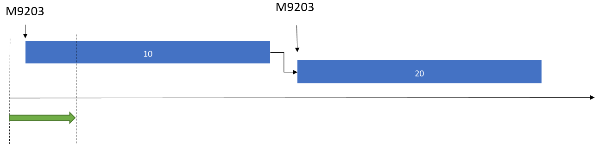
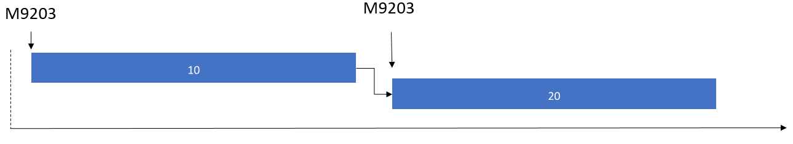

Stücklisten- und Formelpositionen für den Lagerort freigeben
Important
Dynamics 365 for Finance and Operations hat sich zu speziell entwickelten Anwendungen entwickelt, mit denen Sie bestimmte Geschäftsfunktionen verwalten können. Weitere Informationen zu diesen Änderungen finden Sie im Dynamics 365-Lizenzierungshandbuch.
In diesem Thema wird der Prozess für die Freigabe von Rohmaterial für Stücklisten-(BOM)-Positionen und Formelpositionen zum Lagerort beschrieben. Wenn Sie eine Stücklisten- oder eine Formelposition dem Lagerort freigeben, bestimmt das System zuerst, ob das Material am Produktionseingangslagerplatz im Fertigungsbereich bereits vorhanden ist, wo das Material für den Produktionsprozess verbraucht wird.
- Wenn das Material am Produktionseingangslagerplatz verfügbar ist, wird es sofort von diesem Standort entnommen, nachdem das Signal für die Freigabe von Material an den Lagerort gegeben wird.
- Wenn das Material am Produktionseingangslagerplatz nicht verfügbar ist, gibt die Materialfreigabe an, dass Material von Lagerplätzen im Lagerort zum Produktionseingangslagerplatz verschoben werden muss. Das Material wird über Lagerortarbeit für Rohmaterialentnahme verschoben. Daher müssen Lagerortprozesse für Rohmaterialentnahme konfiguriert werden. Weitere Informationen finden Sie unter Nachschubübersicht und Lagerarbeiten mit Hilfe von Arbeitsvorlagen und Standortrichtlinien steuern.
Methoden für die Freigabe von Stücklisten- und Formelpositionen
Sie können die Freigabe von Stücklisten- und Formelpositionen konfigurieren, sodass sie als Teil der Freigabe eines Produktionsauftrags oder Chargenauftrags erolgt. Alternativ kann die Freigabe über einen Batchauftrag gesteuert werden oder als manuelle Interaktion ausgeführt werden.
Die Methode, die verwendet wird, um Stücklisten- und Formelpositionen freizugeben, wird vom Parameter Produktionspositionsfreigabe gesteuert. Sie können diesen Parameter unter Produktionssteuerung > Einstellungen > Produktionsparameter finden.
- Freigeben von Stücklisten- und Formelpositionen als Teil der Produktions- oder Chargenauftragsfreigabe – Bei dieser Methode werden Stücklisten- und Formelpostionen für einen Produktions- oder einen Chargenauftrag als Teil des Prozesses der Freigabe des Auftrags freigegeben. Normalerweise werden während der Freigabe eines Produktions- oder Chargenauftrags Produktionseinzelvorgänge für die Fertigungsbereichsmitarbeiter freigegeben, und die Produktionspapiere werden gedruckt. Bei diesem Prozess wird auch der Status des Auftrags zu Freigegeben geändert.
- Freigeben von Stücklisten- und Formelpositionen über einen Batchauftrag oder eine manuelle Interaktion – In dieser Methode können Stücklisten- und Formelpositionen nur durch den Batchauftrag Automatische Freigabe von Stücklisten- und Formelpositionen freigegeben werden oder als manuelle Interaktion. Um Stücklisten- und Formelpositionen manuell freizugeben, wählen Sie auf der Produktionsauftrags-Listenseite oder der Produktionsauftrags-Detailseite im Aktivitätsbereich die Option Für Lagerort freigeben aus.
Für eine rasche Vorführung zur Freigabe von Stücklisten und Formelzeilen für die Produktion mithilfe eines Stapelverarbeitungsauftrag schauen Sie dieses YouTube-Video an: Freigabe der Produktionskommissionierung für den Lagerort in Chargen.
Freigabe der Stücklisten- und Formelpositionen mithilfe eines Bachauftrags
Der Batchauftrag Automatische Freigabe von Stücklisten- und Formelpositionen durchläuft die ausgewählten Stücklisten- und Formelpositionen, bei denen eine Restmenge freigegeben werden muss. Der Einzelvorgang berücksichtigt nur Aufträge, die einen Status Freigegeben, Gestartet oder Als fertig gemeldet besitzen. Wenn eine Stücklisten- oder Formelposition eine freizugebende Restmenge hat, wird durch den Einzelvorgang bis zur Menge freigegeben, die von der Menge abgedeckt werden kann, die bereits physisch reserviert wurde und die Menge, die physisch verfügbar ist.
Beispiel einer Batchauftragsfreigabe
| Szenario | Für die Freigabe verbleibende Restmenge | Physisch reservierte Menge | Physisch verfügbare Menge | Vom Batchauftrag freigegebene Menge |
|---|---|---|---|---|
| 1 | 100 | 20 | 90 | 100 |
| 2 | 100 | 20 | 70 | 90 |
| 3 | 100 | 0 | 90 | 90 |
| 4 | 100 | 0 | 110 | 100 |
| 5 | 100 | 20 | 0 | 20 |
Batchauftragssetup
In der Abfrage für den Batchauftrag Automatische Freigabe der Stücklisten- und Formelpositionen können Sie ein Filterkriterium einrichten, um anzugeben, wie viele Tage im Voraus der Einzelvorgang nach Positionen suchen soll, die nicht freigegebene Mengen haben. In der Abfrage für den Einzelvorgang, im Feld Rohmaterialdatum, verwenden Sie die Funktion (LessThanDate()) als Filterkriterium.
Die folgende Abbildung zeigt einen Produktionsauftrag, der zwei Einzelvorgänge hat, 10 und 20, die die Zusammenstellung und Verpackung für den Produktionsauftrag abdecken. Jeder Einzelvorgang ist so eingerichtet, dass er eine Menge von Material verbraucht. In dieser Abbildung entspricht der Freigabezeitraum, der durch den grünen Pfeil unter der Zeitposition angezeigt wird der Anzahl der Tage, die im Kriterium (LessThanDate()) festgelegt wurde. Beispielsweise gibt (LessThanDate (2)) an, dass der Einzelvorgang nur innerhalb eines Zeitraums von zwei Tagen nach nicht freigegebenen Mengen suchen soll.

Freigabe von Material pro Arbeitsgangnummer oder im Verhältnis zur Menge der Fertigartikel
Wenn Sie Materialien mithilfe der Parametereinstellung Bei Freigabe des Produktionsauftrags freigeben, wenn Sie eine manuelle Freigabe durchführen, haben Sie zwei Optionen zur Steuerung der Materialfreigabe:
- Geben Sie Material pro Arbeitsgangnummer frei.
- Geben Sie Material im Verhältnis zur Menge der Fertigartikel frei.
Freigeben von Material pro Arbeitsgangnummer
Um die Arbeitsgänge zu steuern, zu denen Material freigegeben werden soll, verwenden Sie die Seite Für Lagerort freigeben.
- Wählen Sie Produktionssteuerung > Produktionsaufträge > Alle Produktionsaufträge aus, wählen Sie einen Produktionsauftrag aus, und klicken Sie auf der Registerkarte Lagerort dann auf Für Lagerort freigeben. Verwenden Sie dann die Felder Von Arbeitsgang-Nr. und Bis Arbeitsgang-Nr., um den Bereich der Arbeitsgangnummern anzugeben.
Die folgende Abbildung zeigt einen Produktionsauftrag, der zwei Arbeitsgänge hat, 10 und 20. Wenn Sie in diesem Beispiel die Freigabe auf Arbeitsgang 10 einschränken, wird nur Material M9203 freigegeben.

Für eine rasche Demonstration zur Freigabe von Material in Relation zum Betrag von Endartikeln schauen Sie dieses kurze YouTube-Video an: Erweiterungen für den Produktionsauftragsfreigabenprozess
Freigeben von Material im Verhältnis zur Menge der Fertigartikel
Sie können Rohmaterial für eine Teilmenge der Fertigartikel oder in einer bestimmte Einheit freigeben.
Um Rohmaterial für eine Teilmenge von Fertigartikeln freizugeben, wählen Sie Produktionssteuerung > Produktionsaufträge > Alle Produktionsaufträge aus, wählen Sie einen Produktionsauftrag aus, und klicken Sie auf der Registerkarte Lagerort dann auf Für Lagerort freigeben. Geben Sie dann eine Menge im Feld Menge ein.
Beispielsweise wird ein Produktionsauftrag für 1.000 Stück (Stk.) erstellt und geplant. Der Abteilungsleiter des Fertigungsbereichs plant die Produktion von 100 Stk. für die nächste Schicht und möchte nur für diese Schicht Materialien freigeben. In diesem Fall kann der Abteilungsleiter das Feld Menge verwenden, um Materialien für die 100 Stk. freizugeben, die für die nächste Schicht geplant sind.
Um Rohmaterial in einer bestimmten Einheit freizugeben, wählen Sie Produktionssteuerung > Produktionsaufträge > Alle Produktionsaufträge aus, wählen Sie einen Produktionsauftrag aus, und klicken Sie auf der Registerkarte Lagerort dann auf Für Lagerort freigeben. Wählen Sie dann mithilfe des Felds Einheit die Einheit von Fertigartikeln, in der Material freigegeben werden soll.
Die Einheiten, die zur Verfügung stehen, werden in der Einheitsnummernkreisgruppen-ID der Fertigartikel definiert.
Ein Fertigartikel weist beispielsweise die folgende Einheitskonvertierung zwischen Kilogramm (kg) und Palette (PL) auf: 1 PL = 50 kg. Um einen Produktionsauftrag für 5.000 kg von Fertigkartikeln zu erstellen, können Sie Rohmaterialen für die Anzahl der Paletten freigeben, für die Sie die Fertigung planen. Wählen Sie PL als Einheit aus, und wählen Sie dann eine entsprechende Zahl im Feld Menge aus.